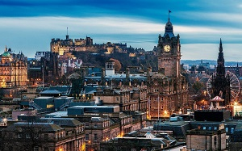

Edimburgo
Home | Introdução | Localização | Multimédia | Informações
Multimédia
Edimburgo é uma cidade ‘dividida’. Encontramos uma parte velha – Old Town – que é dominada pelo Castelo, uma das mais importantes atrações não só pela História como pelas vistas da cidade que se obtêm através de inúmeros pontos. Já na zona nova, a Princes Street é a rua principal onde Edimburgo se mostra como uma zona cosmopolita. O comércio, as principais lojas e marcas e a maior parte dos moradores e turistas vagueiam por esta rua onde encontram tudo o que precisam – monumentos incluídos.


Em baixo, veja um vídeo que apresenta as principais atrações da cidade de Edimburgo:
Poem to Edinburgh
By Valerie Gillies
Stone above storms, you rear upon the ridge: we live on your back, its crag-and-tail, spires and tenements stacked on your spine, the castle and the palace linked by one rope. A spatchcock town, the ribcage split open like a skellie, a kipper, a guttit haddie. We wander through your windy mazes, all our voices are flags on the high street. From the sky’s edge to the grey firth we are the city, you are within us. Each crooked close and wynd is a busy cut on the crowded mile that takes us home in eden Edinburgh, centred on the rock, our city with your seven hills and heavens.